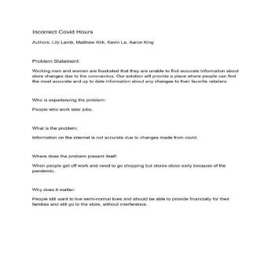

Problem Statement: Coronavirus Comfort
Working men and women are frustrated that they are unable to find accurate information about store changes due to the coronavirus. Our solution will provide a place where people can find the most accurate and up to date information about any changes to their favorite retailers.
Affinity Diagram: Coronavirus Comfort

My group and I came up with as many Coronavirus Comfort related ideas as we could.
Personna: Four personnas for Coronavirus Comfort
My group and I created personnas of prospective Coronavirus Comfort users.
Storyboard: Coronavirus Comfort
Storyboards to demonstrate the problem solving nature of the Coronavirus Comfort app.
Sketches: Coronavirus Comfort
Sketches of potential solutions for the Coronavirus Comfort application.
Paper Prototype: Coronavirus Comfort
The first functional paper prototype of the Coronavirus Comfort App.
Usability Testing: Coronavirus Comfort
A scenario and tasks that test the usablity of our product and suggest changes.
Low-Fidelity: Coronavirus Comfort
.png)
A Low-Fidelity working prototype of our product.